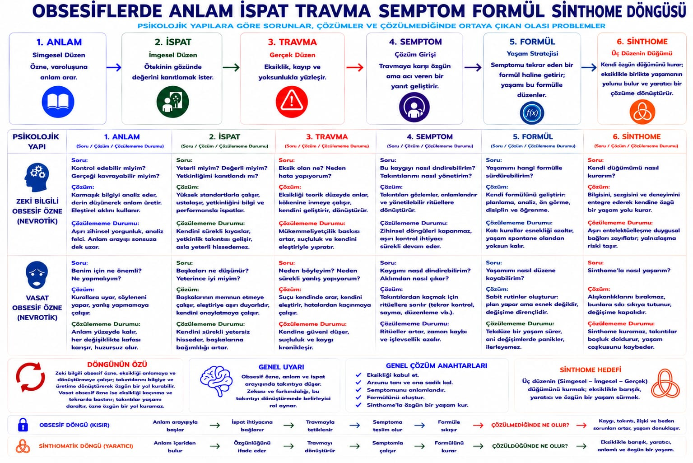
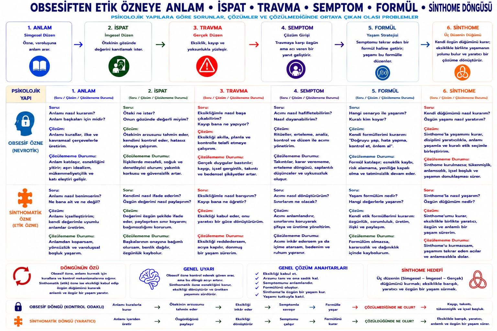

🔒 Nevroz · kontrol
🔒 Obsesif özne
Büyük Öteki'yi uy-ya da-yanlış-ol olarak karşılar. Güvenlik 📋 kural, 🧠 düşünce ve ⏳ ertelemede aranır.
Anlam kurallardan. İspat yetkinlik. Travma kontrol kaybı. Semptom ritüel ve ruminasyon.

